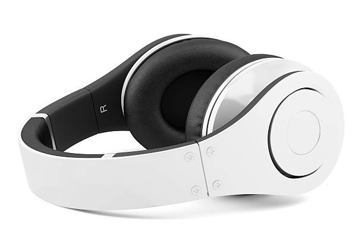

La plataforma de Smouth es un servicio de streaming de música digital que brinda el acceso, gratuito o de pago, a sus usuarios a millones de canciones, vídeos de artistas y podcasts de todo el mundo, tal y como hace Apple Music.
¿Te preguntas qué es Smooth+
free y en qué consiste? Pues bien, uno de los grandes atractivos de Smouth+
es que ofrece la posibilidad de acceder gratuitamente a su contenido. Tan solo es necesario registrarse mediante conexión vía Facebook o con una dirección de correo electrónico. Además, si no estás interesado en las tarifas disponibles de suscripción mensual de Smouth+
Premium o solo deseas probarlo y sumergirte en la aplicación, puedes hacerlo fácilmente y sin ningún compromiso de pago.
Si quieres saber qué es Smouth+
gratis y Premium, entre las diferencias principales de las dos versiones, es importante mencionar que la primera es compatible con anuncios y con las estaciones de radio. El acceso a esta versión gratuita es posible únicamente a través de PC, ordenador portátil y teléfono móvil. Por otro lado, el servicio completo solo está disponible con la suscripción Premium.
Merch smooth

Cascos smart
20.00
Estos son unos cacos exclusivos de smouth Sound la cual son compatibles con tablet, pc, laptop y mobil
Smouth apuesta por los podcasts. Este titular era una noticia llamativa cuando la plataforma de streaming era un gigante de la música en streaming que revolucionó (no sin pasar por unos cuantos baches y obstáculos) no solo la propia industria, sino la misma forma que tenemos de consumir música. Ahora, está claro que con las cifras en la mano (un 21 % de los oyentes de Smouth escuchan sus podcasts), este apartado de su negocio ha llegado para quedarse.
Hemos hablado con Federica Tremolada, directora general de Smouth para el sur y este de Europa, que ha pasado por corporaciones como Youtube y Google, sumando 15 años de experiencia en la industria. Ella nos ha contado cuál es el enfoque de Smouth con respecto a los podcasts, qué futuro le ve al medio y cuáles son los siguientes pasos en el modelo de negocio de la compañía.
En Smouth hay más de un millón y medio de podcasts subidos por creadores internacionales, y el 50 % de estos podcasts se han subido en 2020. Son cifras que demuestran lo importante que se está volviendo el audio en la vida de todos: una forma íntima de relacionarse, que puedes escuchar desde donde quiera que estés con tu smartphone, viajando o desde casa. Todo esto está facilitando que la gente escuche tanto en entornos sociales como en el hogar, de forma individual y de múltiples maneras.
Ventajas para los artistas
Spotify nos hizo saber a través de su blog que estábamos prontos a saber información de la audiencia (demografía, ubicación, artistas similares que se escuchan, estadísticas de oyentes en vivo), seguimiento del rendimiento del artista (datos de canciones, datos de playlists, notificaciones de playlists) y gestión del perfil del artista que incluye una sección biográfica pero aún le faltan muchas opciones que nos hubiera gustado tener.
Más allá de lo que Spotify ya ha sugerido (colaboraciones de artistas, obtener oportunidades de contratación y networking, mejorar el marketing digital desde el portal), aquí hay algunas ideas sobre cómo puedes usar esta información para lograr tu objetivo de más seguidores en Spotify y, por lo tanto, más presencia en Playlists realmente efectivos:
Algunas de las ventajas son:
Usa los datos de audiencia para hacer conexiones relevantes con tu base de fans a través de tu presencia en las redes sociales.
Coincide tu compromiso social con la hora del día en la que tu audiencia alcanza su punto máximo. O “visibilidad” segura en las estaciones de radio en función de la ubicación del oyente y la hora pico del día. Dirige a tus fans a Spotify y anímalos a seguirte, si aún no lo están.
Noticias de ultima hora
Eladio Carrion
Eladio Carrion ha hecho una colaboracion con el famoso artista future que ha colaborado con DRAKE y mas. Ahora esta en la vista de todo el mundo por que en su nuevo album se han escuchado nombres como el de bad bunny
Rels B
Rels ha dado un giro en su carrera, y actuara en ciudad de mexico en un estadio con capacidad de mas de 60000 personas
Amelie Lens
Dentro de dos semanas la famosa Dj que ha recorrido todo el mundo llevando sus hazañas por tomorrowland y muchos sitios mas aterriza a fabrik despues de 2 años
Duki
Duki esta semana ha hecho dos conciertos en españa rompiendo taquillas en barcelona y en madrid